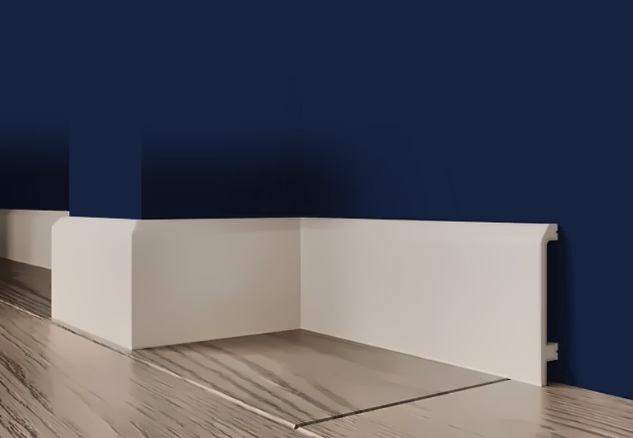

Дюрополимер — что это за материал и чем он хорош для плинтусов и панелей
Словом «дюрополимер» продавцы и мастера называют полистирол высокой плотности, из которого делают плинтусы, молдинги и стеновые панели под покраску. Разбираем, что это за материал на самом деле и что от него ждать.
Что это
Дюрополимер (от лат. durus — твёрдый) — торговое название полистирола высокой плотности. Профиль получают экструзией: расплав полистирола с добавками продавливают через фильеру нужной формы, и на выходе — плотная однородная планка с гладкой поверхностью. Плотность у такого материала в несколько раз выше, чем у лёгких декоративных профилей, поэтому его и называют «твёрдым полимером».
Готовое изделие покрывают белым грунтом под покраску — или наносят декоративную плёнку, как у панелей под дерево и бетон.
Свойства, которые важны на практике
- Твёрдость и ударопрочность. Поверхность не продавливается пальцем, держит удары пылесоса, мебели, детских игрушек. Углы не крошатся при запиле — срез чистый.
- Влагостойкость. Полистирол не впитывает воду: плинтус не разбухает от влажной уборки, панели можно ставить на кухне и в санузле с вытяжкой (вне прямого попадания воды).
- Стабильность размеров. Не коробится при перепадах температуры и влажности в жилом помещении, стыки не расходятся.
- Вес. Лёгкий — плинтус или панель держатся на клее, без дюбелей; одному человеку удобно работать с панелью 3 м.
- Обработка. Режется ножовкой с мелким зубом, лобзиком, острым ножом; шлифуется наждачной бумагой; шпаклюется акрилом.
- Покраска. Любой краской для стен на водной основе, в любой цвет; перекрашивается сколько угодно раз.
Чего он не любит
Растворителей: ацетон, толуол, ксилол и клеи на их основе размягчают поверхность. Поэтому клей — только на водной основе или MS-полимерный, краска — водная. Открытого огня и нагрева выше 70–80 °C — вплотную к плите или камину такие профили не ставят. Сильного удара ребром по тонкой полке — скол возможен, но он легко шпаклюется и закрашивается.
Из чего ещё делают декор — и почему мы выбрали этот материал
Мы продаём только изделия из полистирола высокой плотности и не сравниваем их с чужими материалами, чтобы никого не вводить в заблуждение. Что можно сказать по собственному опыту: такой плинтус переживает ремонт и переезд мебели, панели не нужно беречь от влажной тряпки, а углы режутся с первого раза. Для жилой квартиры, офиса или кафе этого достаточно.

Как отличить хороший профиль
- Геометрия. Планка ровная по всей длине, без «сабли» и винта: положите на пол — не должно быть зазора.
- Поверхность. Грунт гладкий, без пор и шагрени; под покраску не нужно шпаклевать всю плоскость — только стыки.
- Срез. Отпилите край: срез однородный, плотный, без пустот и крошки.
- Вес. Плотный профиль заметно тяжелее мягкого декоративного — его чувствуешь в руке, он не гнётся от собственного веса.
- Чертёж. У каждого нашего изделия на странице есть чертёж сечения с размерами — сверяйте полки, пазы и вылет до покупки.
Что из него делают
- Напольные плинтусы высотой от 65 до 150 мм, в том числе с пазом под LED-ленту — плинтусы.
- Потолочные плинтусы (карнизы), включая профиль под скрытую подсветку — потолочный плинтус.
- Молдинги для рамок и панно на стенах, с кабель-каналом и универсальные — молдинги.
- Стеновые реечные панели под покраску и с готовым декором, длина 3 м — Стеновые панели.
- Декоративные уголки для внешних углов — уголки.
Цены за штуку и за м², размеры и чертёж сечения — на странице каждого изделия.
Отправляем в Москву и любой регион транспортной компанией — как устроена доставка. Самовывоз в Санкт-Петербурге бесплатно.